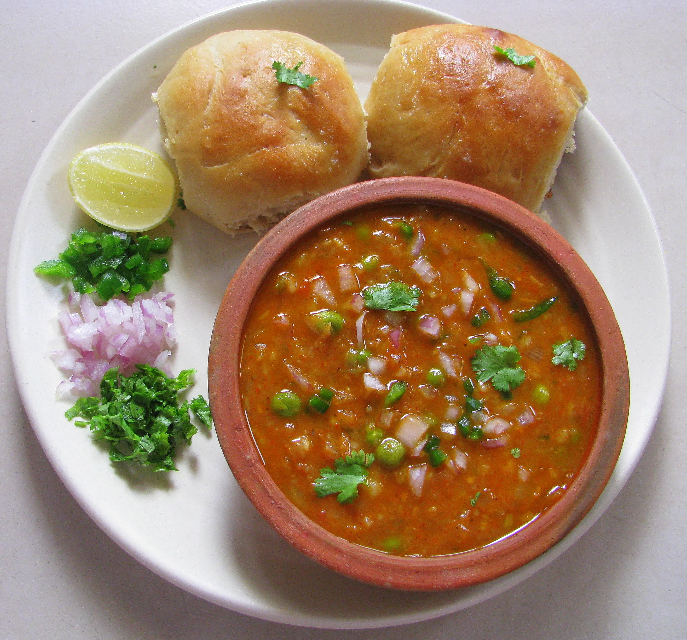
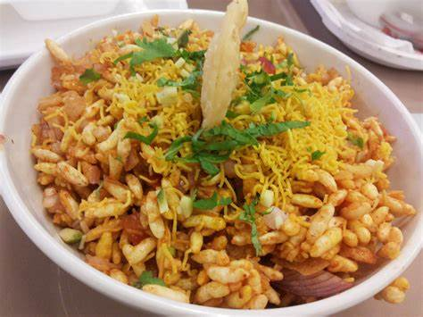
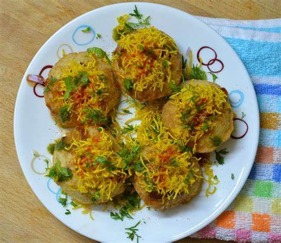
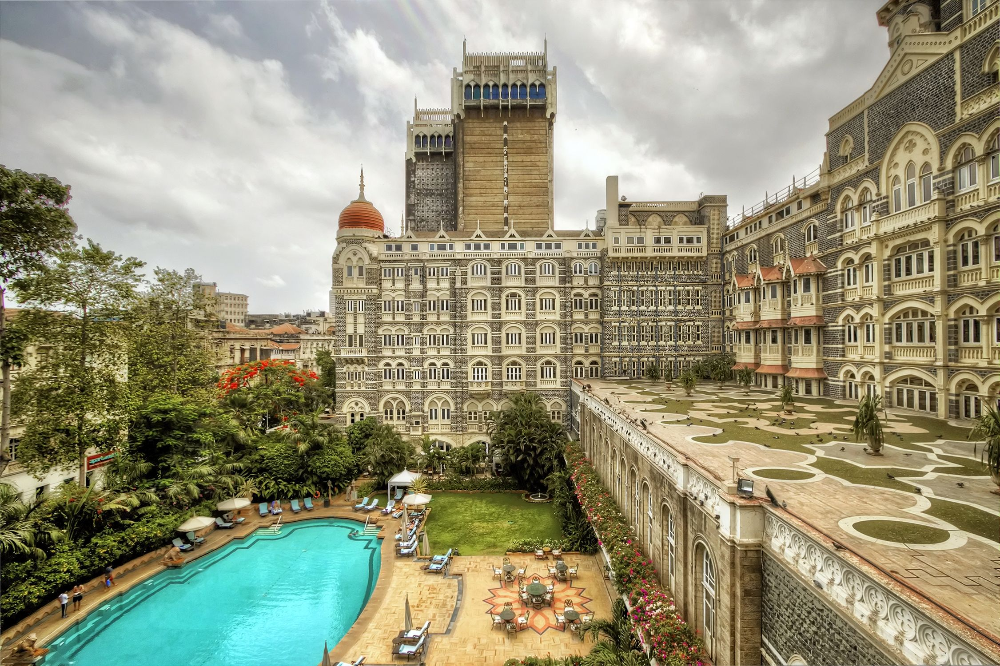
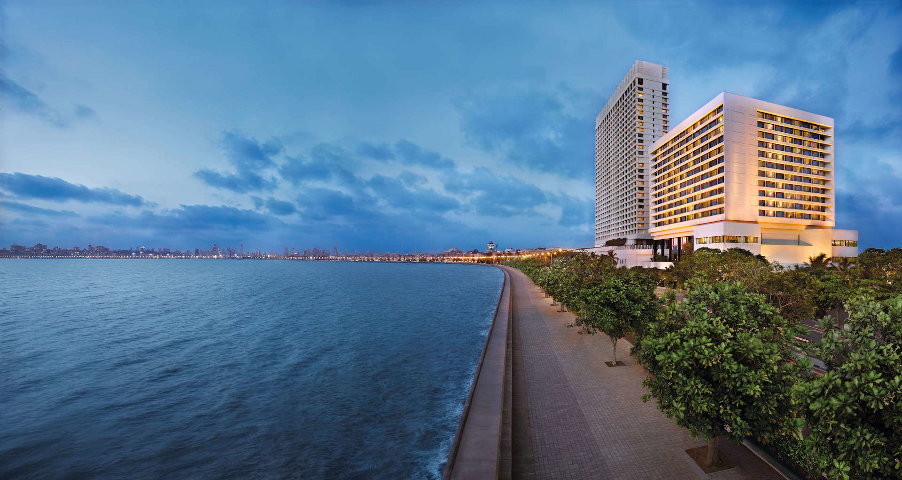
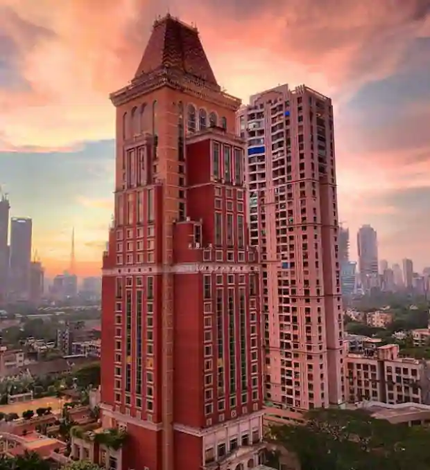
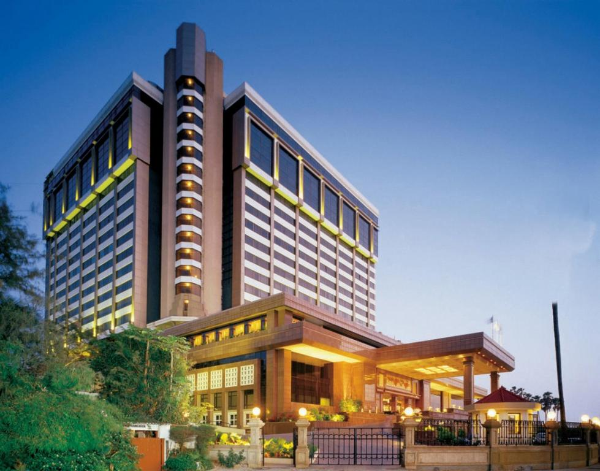

Geological Location Of Mumbai
Mumbai is located on Salsette Island which lies at the mouth of Ulhas River off the western coast of India in the coastal region known as the Konkan. Most of Mumbai is at sea level and the average elevation ranges from 10 to 15 metres. The northern part of Mumbai is hilly and the highest point of the city is at 450 metres (1,450 feet). Mumbai spans a total area of 468 km² (169 sq miles). The metropolitan area spans an area of 4355 sq kms (refer MMRDA basic statistics).
History Of Mumbai
The city’s earliest recorded names are said to be Kakamuchee and Galajunkja, versions of which are still considered to be in use. However, the city was referred to as Manbai in the Mirat-i-Ahmadi, a historical text on Gujarat dating back to 1507 written in Persian by Ali Muhammad Khan. In Lendas da Índia or the Legends of India, written in old Portuguese by writer Gaspar Correia, the city was referred to as Bombaim, meaning ‘good bay’. ‘Bombay’ is an anglicized version of the Portuguese name used by the British when they took control of the city in the 17th century. Adding to the confusion, historical records indicate that the city was referred to as Mombayn , Bombay, Bombain , Bombaym, Monbaym, Mombaim, Mombaym, Bambaye, Bombaiim, Bombeye, Boon Bay, and Bon Bahia, among other names at different points in its colonial history!
Foods Of Mumbai
Pav Bhaji is a portion of perfect street food in Mumbai is the delicious Pav Bhaji made with an assortment of vegetables along with mixing a lot of spices for the right taste.A vegetarian dish in Mumbai, BhelPuri, and SevPuri are the popular ones, normally chaats for quick hunger. BhelPuri is a kind of Marathi chaat made using vegetables, puffed rice, and tamarind chutney.



Historical Monuments Of India
Standing tall on the shore of the Arabian Sea, the Victoria Terminus now called Maharaja Chhatrapati Shivaji Terminus is the first functional railway station of the Indian subcontinent and one of the finest examples of 19th-century railway architecture in the country.Renowned as one of the most iconic structures of India, Gateway of India, was constructed along the Mumbai Harbour in 1924. Located at the tip of Apollo Bunder, this massive structure represents a commemorate memorial.


Hotels in Mumbai
| Hotels In Mumbai | |||
|---|---|---|---|
| Name | Picture | Price | Description |
| The Taj Mahal Hotel |  | ₹ 47,200 | Built in 1903, the iconic Taj Mahal Palace stands majestically opposite the Gateway of India, overlooking the Arabian Sea. Sprawled over 2.6 acres, this luxurious hotel boasts 10 restaurants and a variety of traditional Indian therapies at Jiva Spa. Guests are spoiled for choice in dining options – the famous Wasabi by Morimoto offers innovative Japanese cuisine, while other culinary highlights include the Golden Dragon Chinese Restaurant and the poolside Aquarius Lounge. |
| The Oberoi |  | ₹ 24,783 | Centrally located in Mumbai's business district, close to South Mumbai's shopping and entertainment areas, The Oberoi offers luxury and convenience with its outdoor heated pool, 24-hour spa, fitness and concierge service. It also features 5 food and beverage options offering a variety of cuisines. Complimentary WiFi is available in all rooms. The hotel's elegant rooms feature wooden floors, large windows offering beautiful views and en suite bathroom separated by a glass panel with electronic blinds. |
| ITC Grand Central |  | ₹ 15,927 | ITC Grand Central expresses its character through a fine blend of Raj era and contemporary design.With elegantly appointed rooms and luxury suites, guests enjoy a panoramic view of Mumbai and the sea. Nestled in our skyzone floors are the spacious Executive club,ITC ONE and The Towers Rooms,offering the finest in-room facilities and services through a highly trained team of dedicated butlers. |
| Taj Lands End |  | ₹ 12,970 | Experience the best of Mumbai at Taj Lands End, located in its lifestyle hub, Bandra. With the ambiance of a luxe sea-view retreat that belies the hotel’s central location, we are your ideal choice for visits to this zesty city. |